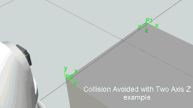

False uses Base to Tool interpolation.
True uses Tool to Base interpolation.
A zero value means robot ignores cycle time.
A value greater than zero means robot overrides speed settings to scale motion to cycle time. For example, a cycle time of 5 seconds means a motion that might otherwise take 2 seconds will now take 5 seconds.
One Axis uses an axis with the smallest angle of rotation to Tool. This is the default mode for Linear Motion statements.
Two Axis selects either the X, Y or Z axis and its direction at Tool. The angle of rotation for the selected axis is applied first, and then other rotations are based around that axis.
Three Axis interpolates either the WPR (Yaw, Pitch, and Roll) or ZYZ (Euler angles) for a target and calculates a sequence of rotations.
Wrist interpolates the robot wrist joints to minimize their movement.
This example shows a limitation of One Axis in which a collision occurs.

This example avoids collision by using Two Axis Z.

See Technical Notes for more information on how tool rotation is calculated and applied for linear motions.
Fixed uses the current configuration of robot.
Follow frame uses configuration closest to previous joint values of robot, so robot will try to maintain current configuration with some small changes.
Interpolate joint values uses a configuration determined by point-to-point interpolation of joint values.